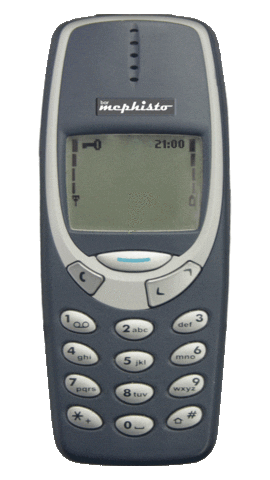
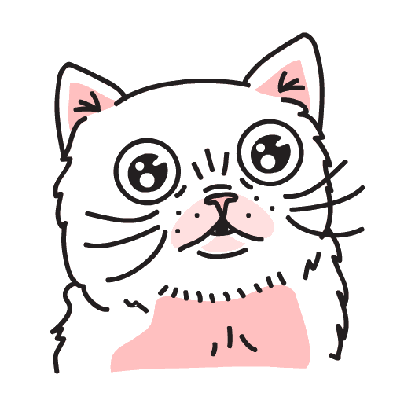
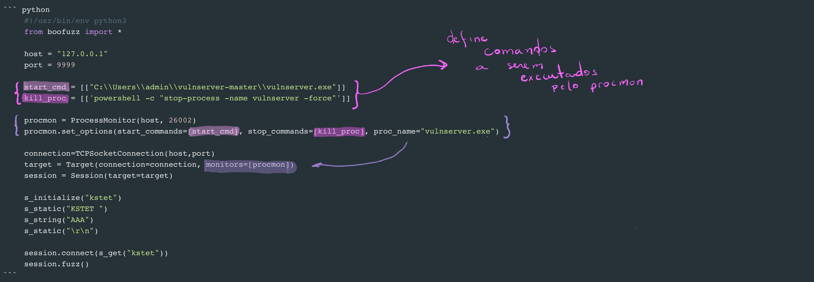
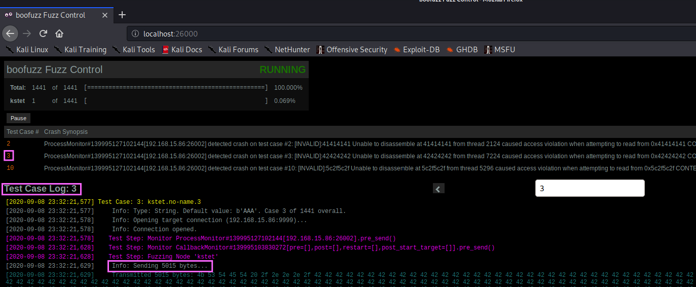
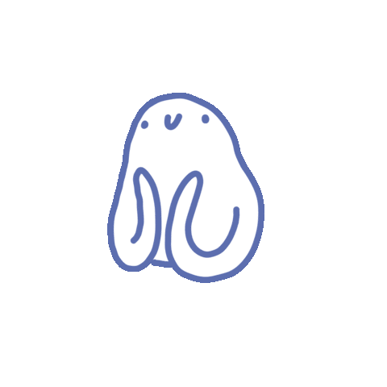
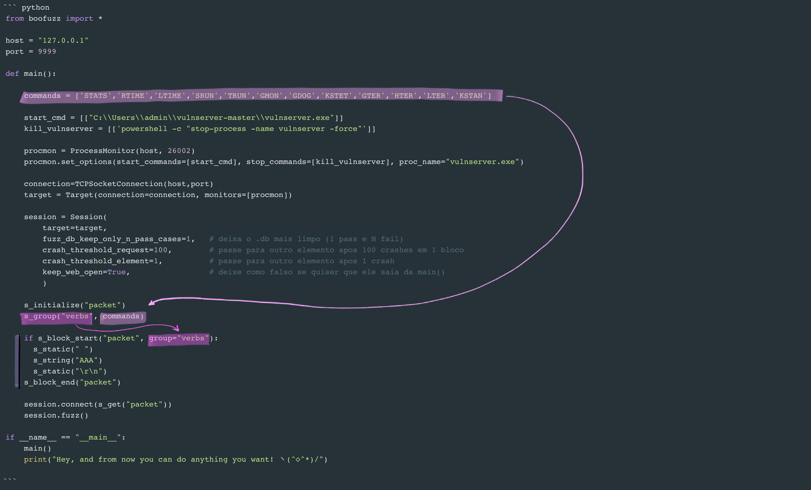
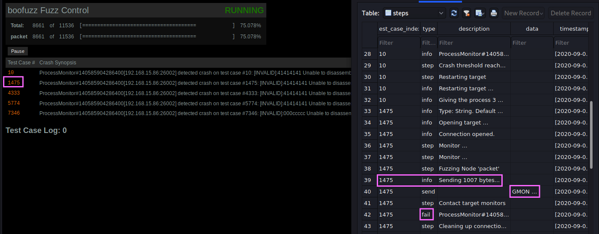

Leia Ouvindo
OSCE: Última parada (Network Fuzzing Essentials)
Bom, faltam 18 dias para a minha prova e chegou o momento de fazer uma grande revisão de tudo que eu estudei até agora...
Pensando que já existem 345678987 reviews sobre a OSCE e que logo mais ela vai se aposentar, não pretendo fazer aquela famosa review pós prova, por isso vou deixar aqui a percepção geral até agora:
O curso é muuuuuuuito raso e básico
Tirando o fato que a Offsec já tem o costume de não te entregar as coisas mastigadas, o curso trata de técnincas bem básicas de exploração Windows x86. Vanilla Buffer Overflows, bypass de antivírus encodando o payload com XOR bléh, ASLR 2 byte overwrite... Ai aparecem algumas PoCs Web e uma falha especifica da CISCO (ok, eu estou sendo bem simplista, mas tudo isso eles deixam disponível no site deles), os labs e o PDF são um passo a passo do index e nada mais NADA MAIS, por isso não acho que valha a pena pegar mais que 30 dias de lab. Não tem 60 máquinas como a OSCP tinha, com desafios e tal. Não, são só as máquinhas que ele explora na ementa mesmo. Ok, mas isso é típico da Offsec (não esperar aprender com o curso) então, sem nenhuma novidade por aqui.
...e é extremamente desatualizado
Eu já tinha lido em várias reviews que o conteúdo que eles apresentavam era desatualizado, mas me surpreendi. Eles estão profundamente desatualizados... msfpayload é usando nas aulas, por exemplo.

Sinceramente foi bem nostálgico! passei vários momentos navegando pelo Internet Archive e relembrando a minha infância. De qualquer forma, a verdade é que você vai ter que caçar o seu suite de ferramentas atualizado.
O meu setup foi:
- Ambiente:
Windows VistaWindows 7 x86 e Windows 10 x86 (na maior parte do tempo eu usei o Windows 10 mesmo)BackTrackKali 2020 - Network Fuzzing:
SpikeBoofuz e Boo-Gen - Debbuger:
OllyDbgImmunity + mona.py - Scripting:
Socketpwntools
...mas o que funcionar para você ツ
meu laboratório foi:
... e só rs.
Bem vindo aos anos 2000 ツ
Network Fuzzing Essentials
Eu tenho que admitir que quando comecei a estudar mais a fundo sobre fuzzing achando que ia me deparar com um assunto fácil e simples e que sairia uma especialista em algumas horas. BAAAM! WRONG. Depois de alguns dias indo mais e mais fundo percebi que errei feio. Fuzzing é um assunto extenso e complexo que eu até chamaria de cientificamente artístico... (talvez eu tenha inventado esse conceito, rs, mas o que eu quero transmitir é algo assim ou assim ou assim)

Enfim, fuzzing, no geral, é o processo de encontrar vulnerabilidades de segurança em partes do código onde existe um parsing de input que permite testar repetidamente com entradas modificadas ou distorcidas...
...ou, como diria Richard Johnson, "Fuzzing is lightning in a bottle":
Senta que lá vem história
Prof. Miller descobriu o fuzzing durante uma tempestade em 1988. O modem dele, com 1200 de baud rate e sem correção de erros, começou a captar interferência por conta da tempestade, jogando um monte de caracteres aleatorios no seu cmd que acabaram por serem interpretados como input em algumas aplicações comuns que acabaram causando um crash! Yup, assim:
Ruído da tempestade injeta caracteres aleatorios no cmd ---> utilitários comuns interpretaram esses caracteres como input --> utilitários comuns crasharam
That's shocking! (Ba dum, tss)
Depois dessa experiência eletrizante, o professor decidiu lançar um projeto para seus alunos chamado de "The Fuzz Generator" com o objetivo de "avaliar a robustez de vários programas utilitários UNIX, devido ao fluxo de entrada imprevisível."
O resultado desse projeto foi o ‘fuzz’, uma das primeiras ferramentas de testagem randômicas que chegou a testar 90 utilidades em 7 variedades do UNIX, crashando um terço delas, rs. Esses resultados foram publicados em um artigo de 1990 intitulado “An Empirical Study of the Reliability of UNIX Utilities” que acabou por cunhar o termo "fuzzing" para esse processo de testes.
Em 1995 ele retomou uma nova série de estudos envolvendo fuzzing e escreveu:
“Our 1995 study surprised us ... the continued prevalence of bugs in the basic UNIX utilities seems a bit disturbing. The simplicity of performing random testing and its demonstrated effectiveness would seem to be irresistible to corporate testing groups.” - Fuzz Revisited: A Re-examination of the Reliability of UNIX Utilities and Services
Bacana, né?
Pode levantar
°。°。°。°。°。°。°。゜。°。°。°。
Depois de descobrir que eu subestimei o fuzzing, queria ressaltar que esse post vai focar só na pontinha do iceberg do fuzzing através da rede usando boofuzz.
fuzz
O boofuzz nada mais é que um netinho do famoso Spike. Primeiro veio o marvellous Spike, depois veio seu filho Sulley que gerou nosso millennial *boofuzz Ü Ter vindo depois não significa que seja o melhor, ainda que o boofuzz seja extremamente prático, ele perde bastante em tempo, toda essa praticidade faz as conexões ficarem mais lentas comparado ao old but gold Spike.
Entretanto, como falei, vamos focar na pontinha do iceberg, rs.
Pontos importantes:
- boofuzz opera através de sessões, o que permite criar várias sessões para serem executadas dentro de um mesmo script \o/
- declarar um comando para fuzzear =! fuzzear o comando. Isso significa que o comando declarado em 's_string' só será executado quando um 's_initialize' for chamado por um 's_get'. WHAT?!
Dá uma olhada nesse código, ele representa uma chamada básica para o comando KSTET do vulnserver.

Essa forma pode ser um pouco frustrante por não trazer nenhuma informação sobre o crash e fazendo você caçar nos logs inflados mais ou menos quantos bytes causou o erro no programa. méh. Para resolver esse problema, podemos usar o Procmon! O que ele faz é basicamente subir um serviço RPC para monitorar o processo do executável, inclusive coletando informações úteis com relação ao crash via pydbg. Adicionando o procmon ao nosso código, ficamos assim:

E aí está, 5015 bytes causaram um dos 3 crashes em 1441 casos de teste:


Antes de você continuar lendo, para usar o ProcessMonitor você deve instalar as dependências necessárias e executar o process_monitor.py na máquina vitima. Tipo assim:

Mesmo que muito simples, esse jeito de ir comando por comando não é nada prático... Se você der uma olhada, ele já vem com algumas "customizações" para a sessão e com uma "Manipulação de Bloco" que permite agrupar vários elementos em um mesmo bloco.
Here you go (∩^o^)⊃━☆゜.*

Analisando o resultados, temos uma visão mais limpa (tanto web, quanto db) dos comandos que causaram um crash.

Disclaimer o "packet" em s_block_start("packet", ...) não define nada além do inicio e fim do bloco, ou seja, poderíamos construir dessa maneira também:
x s_initialize("packet") s_group("verbs", commands) if s_block_start("hey", group="verbs"): s_static(" ") s_string("AAA") s_static("\r\n") s_block_end("hey") session.connect(s_get("packet"))Agora no final descobri um outro fuzzer, dito sucessor do boofuzz, chamado fuzzowski para fechar a familia de Monstros S.A rs, mas não cheguei a olhar a fundo, então vamos ficar só com a menção aqui hehe
É isso :) Como eu disse, essa é só a pontinha do boofuzz, quanto mais de fuzzing... No próximo post vamos nos adoçar com Vanilla Stack Based Buffer Overflows. Nhamy! (◠﹏◠✿).
Até mais :3
Qualquer dúvida ou correção é só me chamar de boas no twitter @nutcake7